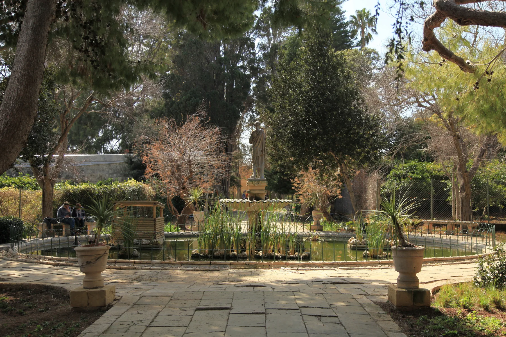

The historic centre and its church context are specific. Confirm frontage, vehicle approach, stairs, light, sound and the real entrance at the property rather than borrowing a village-wide impression.
ATTARD · EXACT STREET FIRST
Garden quarter. Village core. Wider edges.
Attard spans more than one property setting. The older parish-centred core, Sant'Anton side, outer residential streets and the much wider Ta' Qali and rural edge need different viewing questions.

ONE LOCALITY, THREE READS
Attard is not one compact centre.
The Local Council describes a locality of roughly seven square kilometres with named residential areas, agricultural and rural land, and major recreational uses. Start with the verified street before turning “Attard” into a claim about gardens, walkability, quiet, parking or Ta' Qali access.
San Anton Gardens and Villa Bologna orient one side of Attard. A locality label does not establish walking distance, a green outlook, public access or an unaffected route during conservation works.
Outer residential streets, Ta' Qali and agricultural edges create a broader map than the old core. Confirm the official address and daily route instead of treating every outer label as village-centre Attard.
BEFORE THE VIEWING
Make the address answer the brief.
Attard, Balzan and Lija form the familiar Three Villages context, but they remain separate localities. Rabat and Ta' Qali also need their own verified address and route logic.
Ask for the exact street and entrance. Do not silently replace an Attard label with Balzan, Lija, Rabat or a broad Ta' Qali reference.
Check stairs, lift, gradient, loading point, vehicle access and the route you would use. None follows from a garden photograph.
Confirm floor, orientation, obstructions and current surroundings. “Near San Anton” does not prove a garden view or protected outlook.
Walking, bus, driving and taxi questions need separate current sources. A neighbourhood overview cannot supply a route or live ETA.
VERIFIED LOCAL EXAMPLES
Useful anchors, without a ranking.
These council, health and operator sources help frame a viewing. They are examples rather than a complete directory and are not called closest, best or always open. Check current services, menus, stock, works and access directly.
Attard in the Rabat catchment
Primary HealthCare currently lists Attard within the Rabat Health Centre catchment and among its peripheral clinics. Services and timetables remain current checks.
Primary HealthCare source ↗MySupermarket Attard
The operator directory lists an Attard branch on Triq l-Għenba. This confirms one shopping example, not distance or convenience for every address.
Operator locations ↗The Food Coop
The operator places its community-owned food shop on Triq il-Pitkali and says non-members can shop there. Stock, access and hours remain direct checks.
Operator site ↗Villa Bologna Restaurant
The operator identifies an Italian restaurant and bar at 30 Triq San Anton within the Villa Bologna gardens. It is a specific example, not a ranking or locality-wide proximity claim.
Operator site ↗San Anton access is a current check.
A Government of Malta release dated 1 August 2026 describes phased conservation works in San Anton Gardens and says unaffected sections can remain open while work moves between phases. This preview does not promise that every path, entrance or section is available on the day of a visit.
No overview line becomes a route.
This edition draws no administrative boundary, straight-line shortcut, generic walking route, road ETA, public-transport itinerary or ferry. Walking geometry, bus schedules, current traffic and taxi prices remain separate products requiring exact endpoints, mode, source and timestamp.
Load the Attard overview only when you need it.
The map provides broad orientation around Attard, Sant'Anton, Balzan, Lija and Ta' Qali. It deliberately draws no locality border, property route or journey time and loads from OpenStreetMap only after your click.
Attard Local Council · Council geography and history · Council churches and chapels · Rabat Health Centre · MyConvenience / MySupermarket locations · The Food Coop · Villa Bologna Restaurant · Government of Malta — San Anton works · Wikimedia Commons image record

No ranking, fixed opening hours, property-specific route, guaranteed outlook, parking claim, accessibility promise, locality-wide walkability or journey time is claimed.